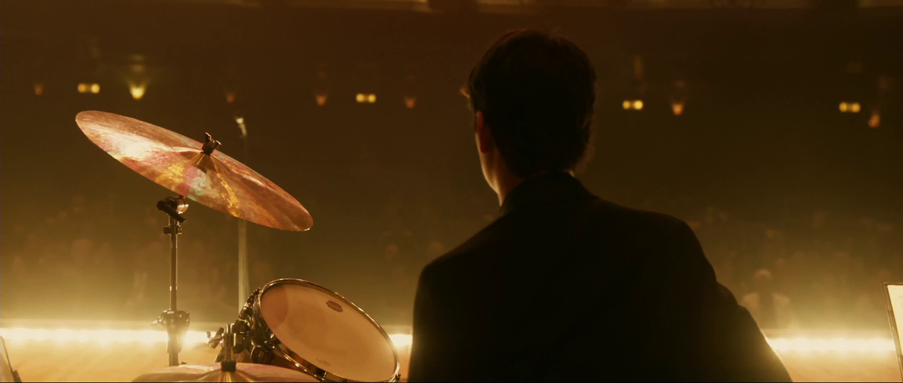

W h a t i s W h i p l a s h W e e k ?
Whiplash week is a week we take to appreciate the greatness of the Whiplash movie. This week is primarily for jazz drummers who also love the movie Whiplash! Common practices include worshipping miles teller and J.K Simmons, over playing Caravan, and sleeping to Overture! And also, it is common to watch Whiplash every single day of Whiplash Week and become obsessed with it! Make sure that you have a special Whiplash Activity to do every day.
W h y W h i p l a s h W e e k ?
Whiplash has some of the best Jazz drumming, music and acting and is a great movie for anyone to see! It is important to continuously praise and worship Whiplash because it will change your life and it is a good way to learn new jazz music!
W h e n i s W h i p l a s h W e e k ?
Whiplash Week can happen on any week that you desire! However, it is paramount that you celebrate Whiplash Week on Ocotober 10th, the release date for Whiplash in the US! (Officially). If you're having a tough week and you're just not feeling it, or you've been drumming a lot lately, that might be a good time to go through Whiplash Week!

W h a t t o d o d u r i n g W h i p l a s h W e e k ?
